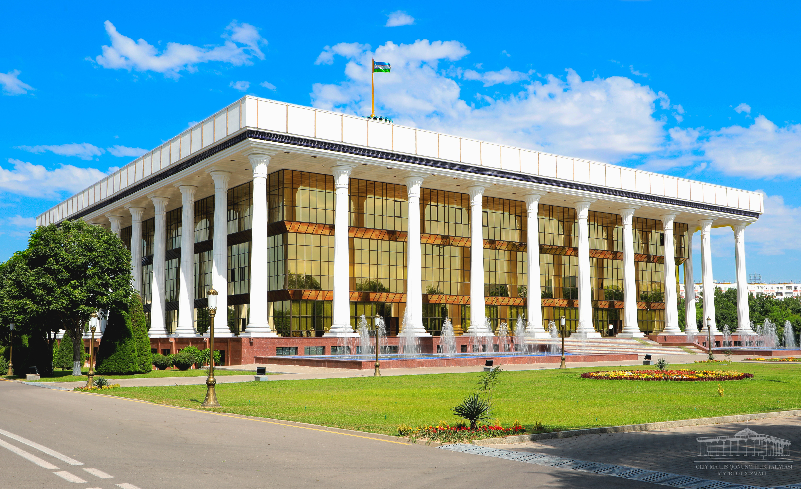

Переход Узбекистана к двухпалатному парламенту: референдум 2002 года и создание Сената (2002–2005)
С 1995 года Олий Мажлис Узбекистана был однопалатным, с 250 депутатами. На референдуме 27 января 2002 года избирателям предложили сделать парламент двухпалатным и продлить президентский срок с пяти до семи лет; по официальным результатам оба предложения были одобрены. Двухпалатный Олий Мажлис приступил к работе 27 января 2005 года после выборов декабря 2004 – января 2005 года: нижняя палата — Законодательная палата (сначала 120 мест) и верхняя палата — Сенат (100 членов). По авторитетным источникам.

Одним из значимых изменений в государственном строительстве Узбекистана в годы независимости стал переход парламента от одной палаты к двухпалатной системе. Реформа началась с референдума 2002 года и завершилась в 2005 году созданием Законодательной палаты и Сената. Ниже этот процесс изложен строго по фактам, на основе авторитетных источников.
До 2002 года: однопалатный Олий Мажлис
Олий Мажлис сменил Верховный Совет (Олий Кенгаш) в 1995 году и оставался однопалатным до реформы, осуществлённой в 2005 году. Первые выборы прошли 25 декабря 1994 года, а также 8 и 22 января 1995 года. Однопалатный орган состоял из 250 депутатов, избранных в 1994/1995 и затем в 1999 году.
Референдум 27 января 2002 года
На референдуме 27 января 2002 года было вынесено два вопроса: согласие на то, чтобы следующий созыв парламента был двухпалатным, и согласие изменить конституционный срок полномочий президента с пяти до семи лет. По официальным результатам, предложение о двухпалатном парламенте одобрили 93,65%, а продление президентского срока — 91,78%; объявленная явка составила 92%.

Возражения наблюдателей
Большинство международных наблюдателей воздержались от систематического наблюдения за референдумом; правозащитные организации, такие как Human Rights Watch, его критиковали. Продление президентского срока означало, что действовавший тогда срок продлевался до 2007 года вместо 2005-го.
Создание двухпалатного парламента
После референдума были внесены конституционные поправки, и первый двухпалатный Олий Мажлис сформировался после выборов декабря 2004 – января 2005 года. Законодательная палата (нижняя палата) в первом созыве имела 120 мест; депутаты избирались по одномандатным округам. Сенат (верхняя палата) состоит из 100 членов: 84 избираются территориальными представительными советами (областей, Республики Каракалпакстан и города Ташкента), а 16 назначаются Президентом.
Ключевые даты и руководители
Выборы в Законодательную палату прошли в два тура: первый тур 26 декабря 2004 года и второй тур 9 января 2005 года. Обе палаты приступили к работе 27 января 2005 года — ровно через три года после референдума. Первым Председателем Сената был избран Муроджон Шарифходжаев (27 января 2005 – 24 февраля 2006), а первым спикером Законодательной палаты — Эркин Халилов. За выборами наблюдала ограниченная миссия ОБСЕ/БДИПЧ, итоговый отчёт которой опубликован 7 марта 2005 года.
Официальная цель реформы
Официально заявленной целью реформы было создание нижней палаты (Законодательной палаты), работающей на постоянной, профессиональной основе, вместе с верхней палатой (Сенатом), обеспечивающей территориальное представительство областей, Каракалпакстана и города Ташкента.
Последующие изменения
Число мест в Законодательной палате позже увеличилось: 120 мест относились только к первому созыву (2005–2009); с выборов декабря 2009 – января 2010 года палата была расширена до 150 мест. Сегодня Олий Мажлис насчитывает всего 250 членов — 150 в Законодательной палате и 100 в Сенате. Двухпалатная структура стала постоянной чертой государственного строительства после обретения независимости.

Источники
- Wikipedia — 2002 Uzbek constitutional referendum (questions, results)
- Wikipedia — Oliy Majlis (history, structure)
- Wikipedia — Senate of Uzbekistan (composition, first chairman)
- Wikipedia — 2004–05 Uzbek parliamentary election (dates, 120 seats)
- OSCE/ODIHR — Uzbekistan, parliamentary elections 2004 (final report, 7 March 2005)